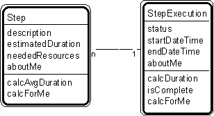

Patt#22. "Step - Step Execution" Pattern // plan patterns

Typical object interactions
- calcAvgDuration --> calcDuration
Examples
- tactic - tactic execution, recipe step - recipe step execution, job step - job step execution, procedure step - procedure step execution.
Combinations
Patt#20. "Plan-Step"
Patt#23. "Plan Execution - Step Execution."